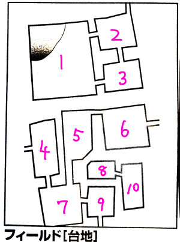

台地情報

#1
#2
#3
- シーンの神殿がある。ベラドンナが住処にしている模様。
#4
- 北側の崖に人が通れそうな亀裂があり、先へ行くと#1に行ける
#5
- 丘の上に石碑がいくつも立っており、石碑のひとつが倒れていてその下に地下への通路がある
- 第15回で遺跡発見
#6
- 丘の上に大きな岩が折り重なっている岩場があり、その下に通路がある
#7
- 陥没した穴がたくさんある。セージ判定に成功したので地震によりよるものと判明。「地震に警戒する」という宣言するとイベント表から地震の項目が消えるらしい。これ宣言タイミングどこ？
#8
- 暗い。エリアそのものが洞窟になっている。
- 地図に記載はないが北東(#6)、北西(#5)、南(#9)へ行く道がある。
#9
- 北と東に絶壁。北はここより高く、東はここより低い。
- 北は10mほど登る(登攀判定不要)と岩だながあってそこに洞窟がある
- 東は登攀判定がいるレベルで急だが途中に岩だながあって洞窟がある
#10
その他